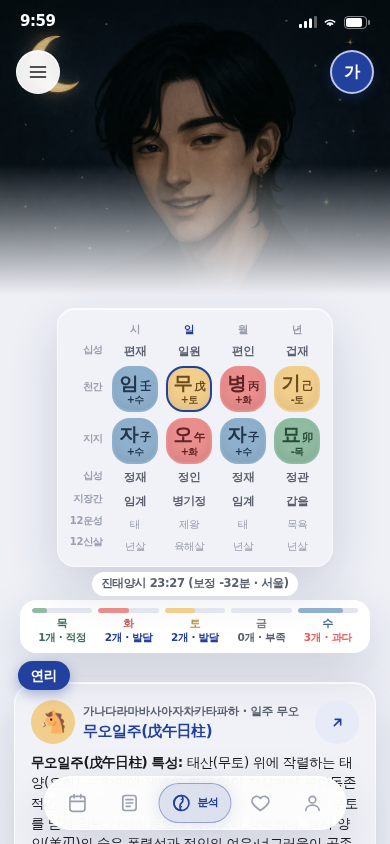
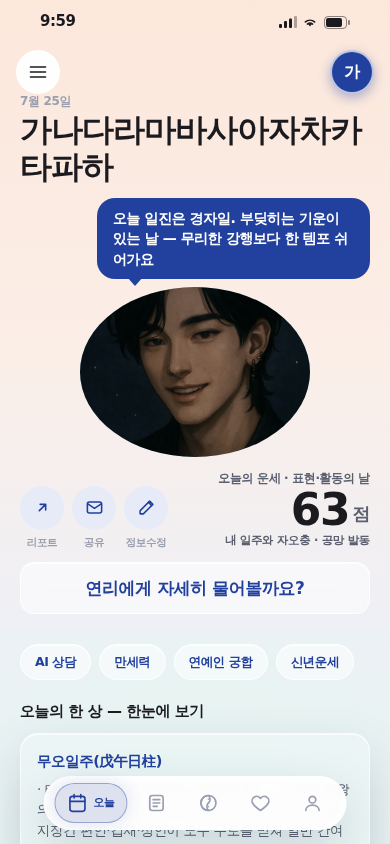
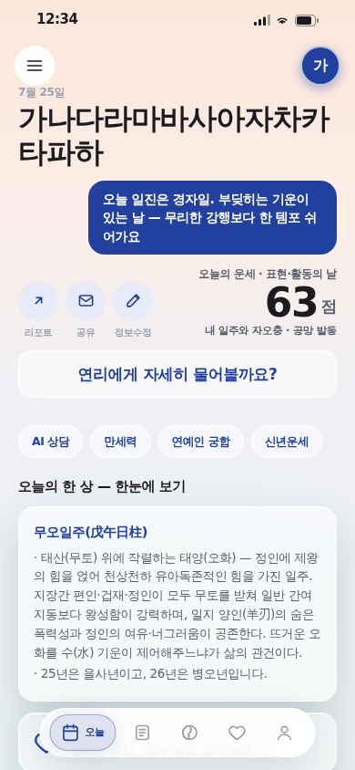
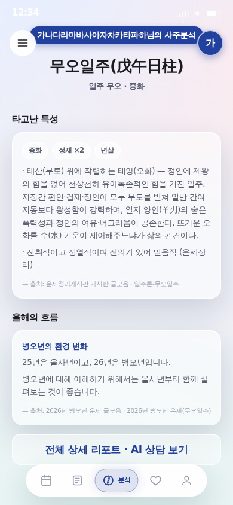
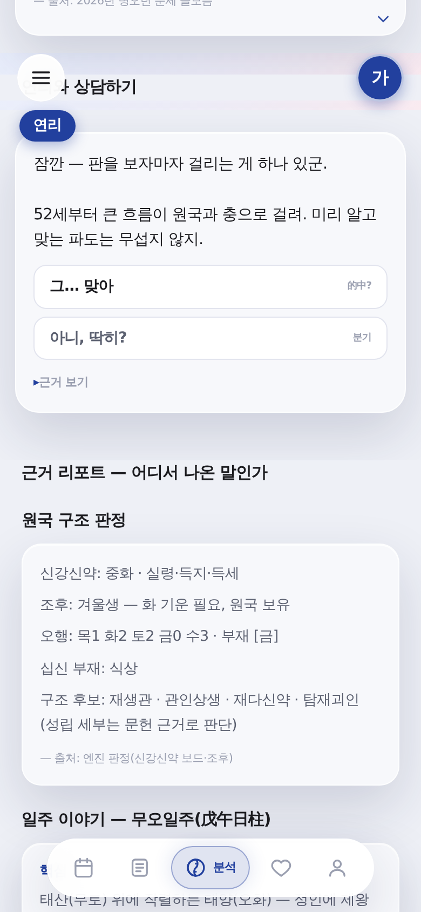

캐릭터 이미지 제거 · 글래스 통일 · 미연시 상담 동선
2026-07-25 · 지시 3건: "보이는 글자 영역은 글래스모피즘을 쓰되 깔끔하게" / "기존 여자·남자 이미지는 그냥 없애. 아무 의미가 없음. 나중에 캐릭터 입힐 때 적용하도록" / "사주 상담은 항상 미연시 방향으로 진행하게 해"
아래 컷은 전부 실제 렌더(헤드리스 390×844 · ?qa=1). 왼쪽 = 전(이미지 있던 상태), 오른쪽 = 후.
지금 바로 해볼 수 있는 샘플
미연시 상담이 첫 화면부터 시작되는 링크다. 연리가 먼저 단정을 던지고 [그… 맞아 / 아니, 딱히?]로 갈린다.
▶ 상담부터 시작해보기 앱 처음부터 둘러보기로그인 없이 열린다(?qa=1 = 대표데이터 시드). 실제 내 사주로 보려면 앱에서 정보만 입력하면 된다.
1. 캐릭터 이미지 제거 — 기제는 남겼다


그림이 먹던 300px이 정보로 채워졌다 — 원국표 7행이 첫 화면에 다 들어온다. 지운 게 아니라 잠갔다: chefs.ts의 ACTIVE_CHEF_ID = null 한 줄이 스위치이고, 레지스트리·플레이트 파일·표정 컷 경로는 그대로 있다. 캐릭터가 확정되면 그 한 줄만 켜면 3개소(홈 원형·분석 스테이지·로그인 배경)가 동시에 되살아난다.


말풍선 꼬리도 함께 떼어냈다 — 가리킬 캐릭터가 없는 꼬리는 허공을 가리킨다. 이것도 같은 스위치에 묶여 있어 캐릭터가 돌아오면 꼬리도 돌아온다.
2. 글래스모피즘 — 깔끔하게 한 값으로


글자가 얹히는 표면의 유리 값이 --glass .15와 .glass-strong .55 두 종류로 갈려 있었고, .15는 카드 경계가 사라져 얼룩처럼 보였다. 진한 쪽(.55/.75)으로 수렴시켰다 — 새 값을 만든 게 아니라 이미 정본에 있던 두 값 중 하나를 골랐다. 이제 글자 표면은 문법 1종이다. blur는 그대로라 유리감은 유지된다.
3. 미연시 상담이 주 동선

전: 리포트 7섹션 + 대운 레일을 다 지나야 대화가 나왔다 = 대화가 부록이었다.
후: 순서가 원국표 → 연리 인사 → 연리와 상담 → 근거 리포트로 바뀌었다. 상담이 결론이고 리포트는 그 결론의 출처다(섹션 이름도 「근거 리포트 — 어디서 나온 말인가」로).
#chat 딥링크를 새로 뚫어 링크 하나로 대화에 바로 착지한다(착지점은 상주 크롬 아래 102px — 햄버거에 첫 줄이 깔리지 않게 실측으로 맞췄다). 레퍼런스 정합: 마이파이"리포트형이 아니라 대화식" · 헬로우봇 = 챗봇 상담이 축.
4. 이미지가 빠지면서 깨진 것 — 같이 고쳤다
| 증상 | 원인 | 수선 |
|---|---|---|
| 리포트 원국표가 햄버거·아바타에 깔림 | 스테이지가 사라지자 본문이 크롬 높이만큼 위로 올라옴 | 캐릭터 미배정일 때만 본문 상단 여백 확보(다른 셸 화면과 같은 리듬) |
| 말풍선 꼬리가 허공을 가리킴 | 꼬리는 캐릭터를 가리키는 장치였음 | 같은 스위치에 묶어 함께 잠금 |
| 상태바 글자가 안 보임 | 어두운 사진용 밝은 글자(dark)로 고정돼 있었음 | 캐릭터 유무에 따라 자동 전환 |
#chat 링크가 해시를 잃음 | QA 딥링크가 라우트를 갈아탈 때 해시를 버렸음 | 해시 보존 |
5. 게이트
npm run verify 6/6 전부 통과(파생물 → vendor 드리프트 → 엔진 테스트 19건 → 증류 인용 223건·리플레이 → 앱 빌드 → 브라우저 스모크). 경로 게이트의 기존 오탐도 해소돼 처음으로 완전 초록이다.